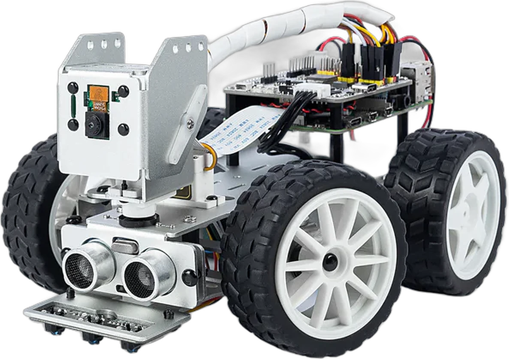
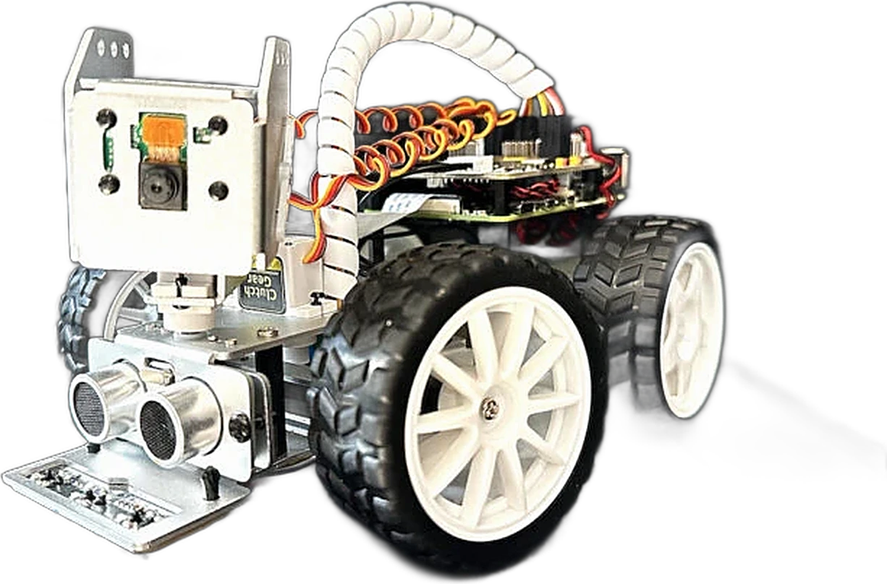
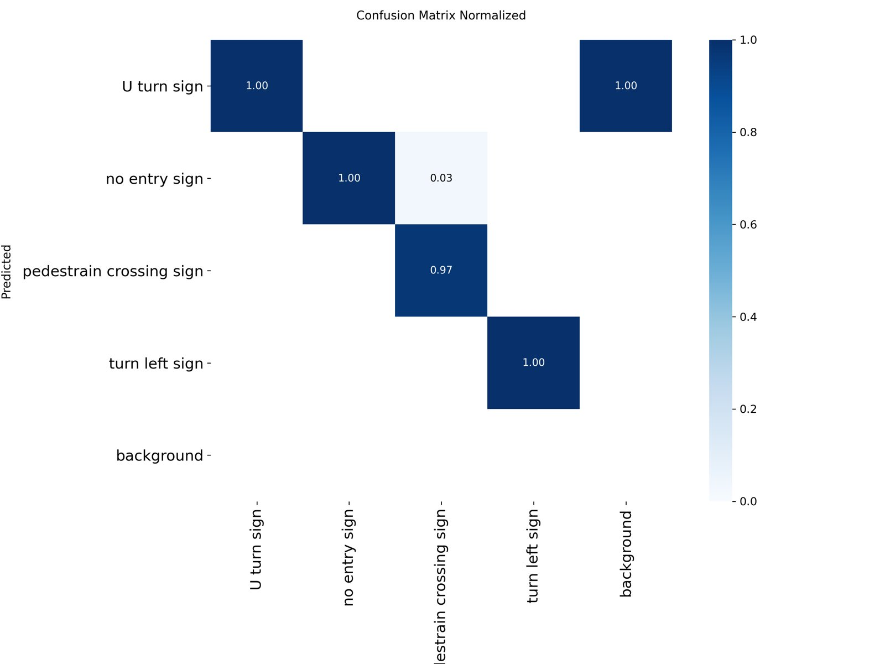
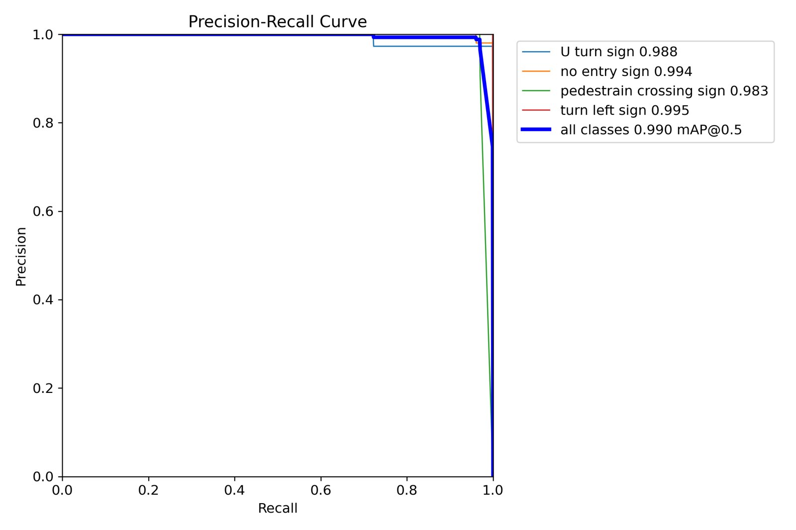
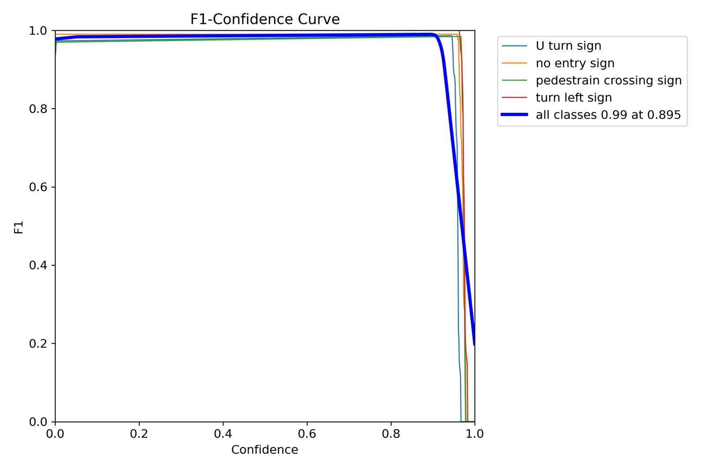
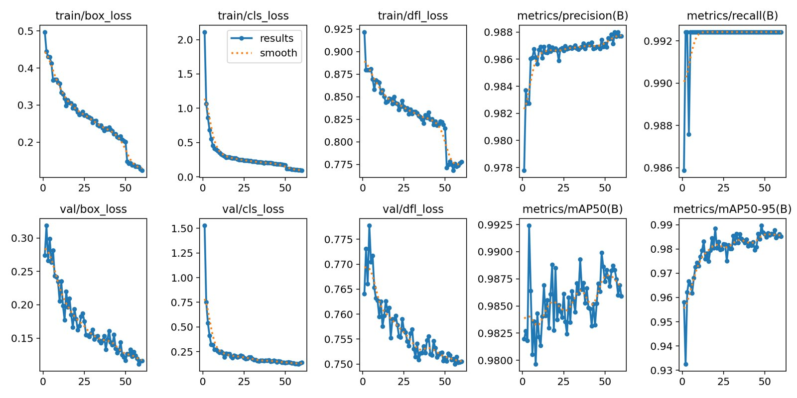
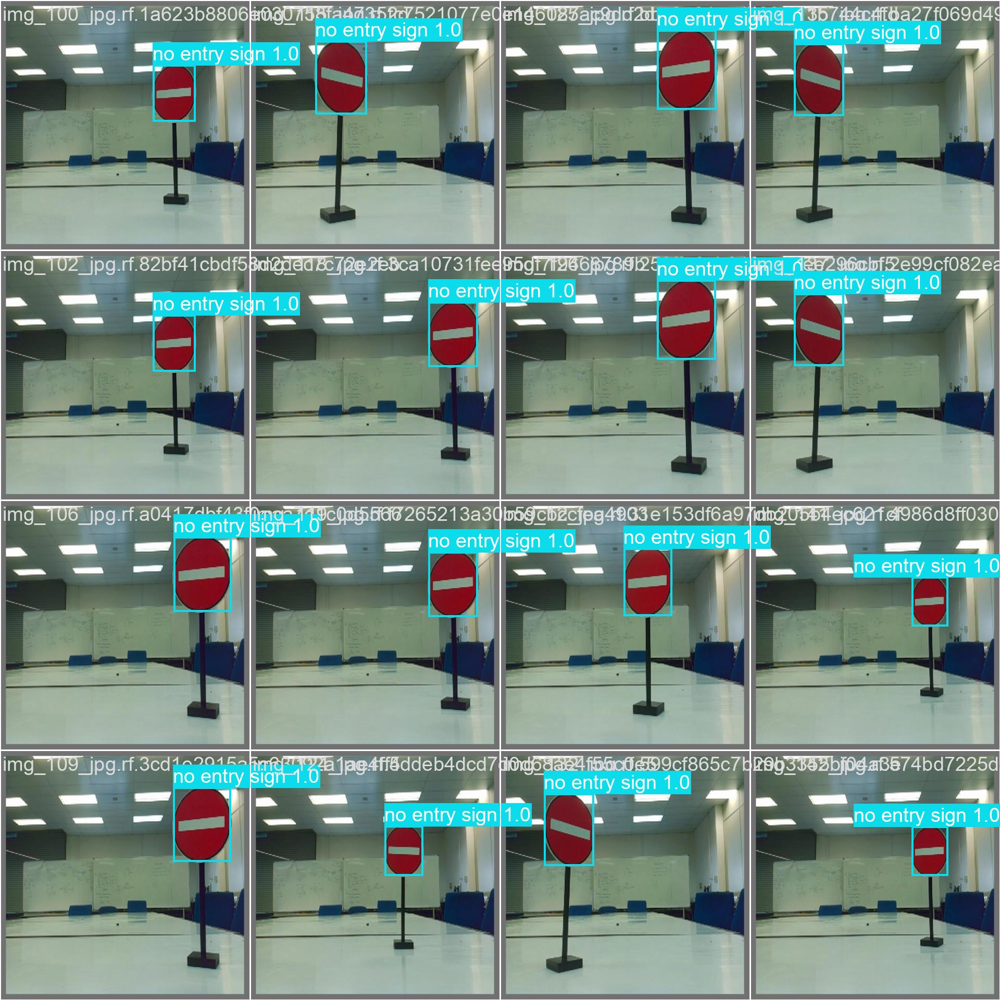
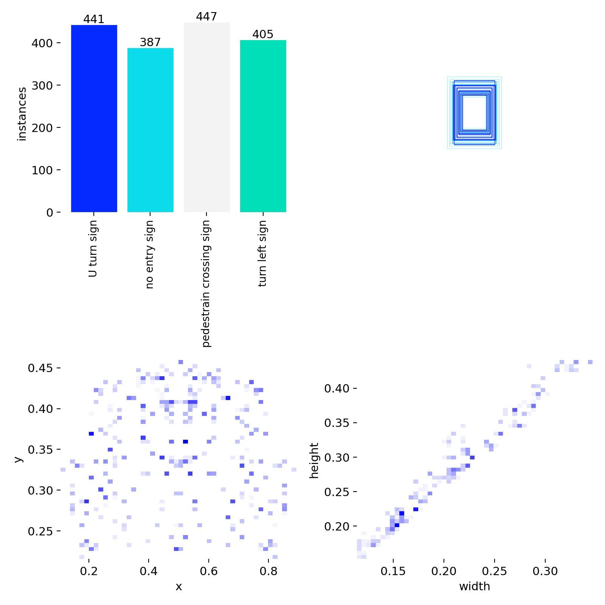

The platform
A four-wheel robot car. The parts it needs to see, think and move all sit on the chassis, with no laptop or server attached.
4 wheelsBattery poweredFully on-device
On-device AI that detects traffic signs and drives a robot using only the CPU of a Raspberry Pi 5. It runs at 16.3 FPS with no GPU and no cloud.

Creation, Innovation, Technology & Research Exposition.
Faculty of Manufacturing & Mechatronic Engineering Technology.
Meet the robot · scroll
A four-wheel robot car. The parts it needs to see, think and move all sit on the chassis, with no laptop or server attached.
Mounted on a pan-tilt head at the front. It streams 640×480 frames straight into YOLOv11n.
Measures the distance to objects ahead, giving the robot basic obstacle avoidance.
Three downward-facing sensors read the line on the floor, so the car keeps its lane when no sign is in view.
The Pi 5 runs YOLOv11-NCNN on its CPU at 16.3 FPS. The Robot HAT on top drives the motors and servos and regulates power.
The wheels carry out every decision: full speed, slow down, turn or stop, based on what the camera and sensors report.
Overview
Most autonomous systems lean on expensive GPUs or the cloud. This project shows that a credit-card-sized computer can see, decide and drive on its own. A camera, a nano-sized neural network and a well-optimised inference engine are enough to react to the road in real time.
YOLOv11n localises and classifies four traffic-sign classes, with several signs in the same frame.
0.99 mAPThe model is converted and tuned for NCNN's ARM kernels. That gives about 5× the speed of the original PyTorch pipeline.
16.3 FPSVision decisions are fused with grayscale-sensor line following, so the robot moves in a stable, predictable way.
AI + sensorsThrough its eyes

Decision logic · scroll to drive
Methodology
Each step runs on the Raspberry Pi itself, with nothing sent to another computer.
The Pi Camera streams real-time video frames.
Frames are converted from RGB to BGR and resized to 640×480.
YOLOv11n on NCNN localises and classifies signs.
Detections are fused with grayscale lane data.
Speed and direction are sent to the motor controller.
The cycle repeats until a quit action is triggered.
Training & validation
YOLOv11n was trained on Google Colab for 60 epochs at 640 px with batch size 16. The dataset is balanced: 800 images annotated in Roboflow across four traffic-sign classes.
Per-epoch values from results.csv. Hover over the chart to inspect an epoch.






Embedded performance
Keep scrolling to watch the pipelines race. The hardware never changed; the gains all come from software optimisation.
Accurate, but only 2.7–3.2 FPS on the Raspberry Pi 5. That is too slow for smooth reactions.
About 3× faster, but confidence dropped and it sometimes misclassified signs, reading U-Turn as No Entry.
16.3 FPS with 0.92–0.94 confidence on all four signs and very little confusion between classes. This is now the production pipeline.
Demonstrations · keep scrolling
Every clip was recorded on the Raspberry Pi 5. The FPS counter is burned into each feed.
Impact
Explore the project
Read the full thesis, download the training results, or get in touch.
baazexmoneim@gmail.com